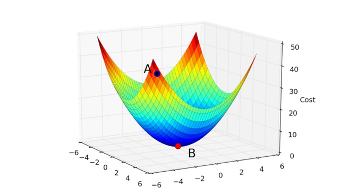
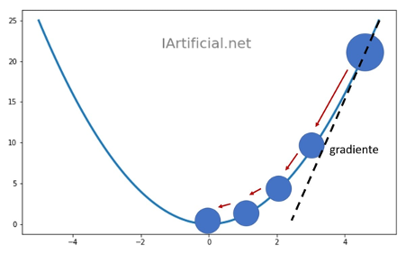
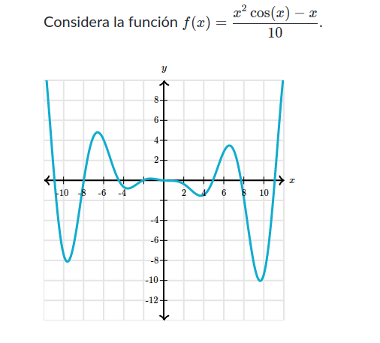

Es un modelo de red neuronal que se utiliza en regresión lineal en base al modelo matemático de descenso del gradiente.

La forma en la que el descenso de gradiente logra encontrar el mínimo de funciones es más fácil de imaginar en tres dimensiones.
En una función f(x,y) que define algún terreno montañoso cuando se grafica como un mapa de altura. Aprendimos que el gradiente evaluado en cualquier punto representa la dirección del ascenso más pronunciado por este terreno montañoso. Eso podría darte una idea de cómo maximizar la función: comenzar con una entrada aleatoria, y tantas veces como podamos, dar un pequeño paso en la dirección del gradiente para movernos cuesta arriba. En otras palabras, subir la colina.
para minimizar la función, podemos seguir el negativo del gradiente, y así ir en la dirección del descenso más pronunciado. Este es el descenso de gradiente. Formalmente, si comenzamos en un punto y nos movemos una distancia positiva en la dirección del gradiente negativo
ejemplo:
En la gráfica, esta función tiene muchos mínimos locales. El descenso de gradiente encontrará diferentes mínimos dependiendo de nuestra conjetura inicial y de nuestro tamaño de paso.
Si por ejemplo elegimos el x inicial como 6 y un ratio de aprendizaje, que sera lo que vamos a avanzar por cada iteración.